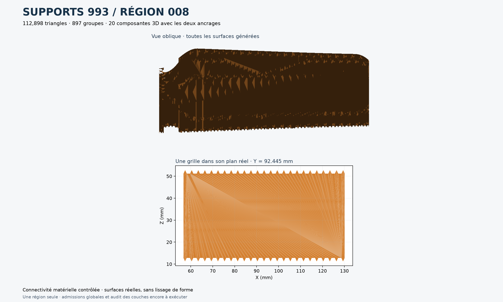

La pièce et ses dimensions · Les cartes mécaniques
Une région de supports corrigée
Voici les surfaces réellement produites pour la région droite, source 008 : 112 898 triangles, 897 groupes et 20 composantes 3D. Le graphe matériel ne trouve plus de composante sans les deux contacts requis. L’essai précédent à feuilles pleines en comptait quatorze.

En haut, les feuilles de support de cette région. En bas, une grille isolée dans son vrai plan : les dents et la matière représentées proviennent de ses triangles calculés.
Ce résultat porte sur la connectivité matérielle d’une région. Le contrôle de toutes les régions et des contacts sur les couches d’impression est traité séparément.
Géométrie, preuve de région et empreintes des sources